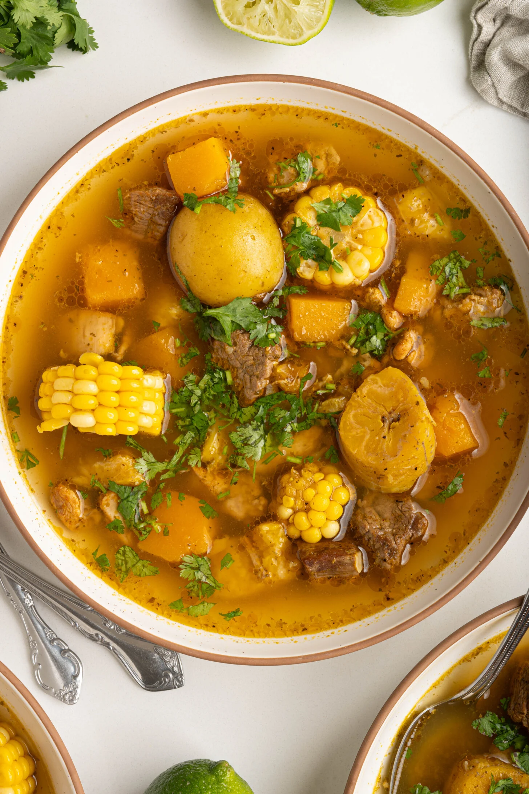

Sancocho

Description
This recipe will create my favorite type of soup which is a dish with a rich broth, chicken and steak, with hearty stewed veggies and spices.
The prep time is 30 minutes with a cook time of 1 hour.
Ingredients
- 2 tbsp olive oil
- 1 lb beef stew meat, cut into 2 inch cubes
- 1 lb chicken cut into bite sized pieces
- 2 tsp of sazon seasoning
- 2 tsp of adobo seasoning
- 1/2 cup of sofrito
- 2 ears of corn cut into 1 inch rounds
- 1 green plantain peeled, cut into 1 incho rounds
- 1 yam or sweet potato cut into 1 inch chunks
- 1 cup baby potatoes
- 1 cup any type of squash cut into 1 inch cubes
- 8 cups of water or broth
- salt and pepper to taste
- optional: cilantro, lime juice and or pique to garnish
Steps
- Cook the meat. Heat the olive oil over medium heat in a pot before adding beef, chicken, seasonings & sofrito.
Brown the meat, mixing every couple minutes to cook evenly.
- Add the vegetables & broth. Add the vegetables to the pot,
mix gently to coat with the seasonings before adding the water or broth.
- Cook the veggies. Bring the liquid to a boil before covering, lowering & simmering for 30 minutes.
Uncover and continue to simmer until the vegetables & beef are cooked through, about 20 minutes.
- Season. Taste the broth and season as needed with salt & pepper.
- Serve. Enjoy with a bowl of rice, mofongo, or tostones on the side. Garnish with cilantro, lime juice, and/or pique.
Home